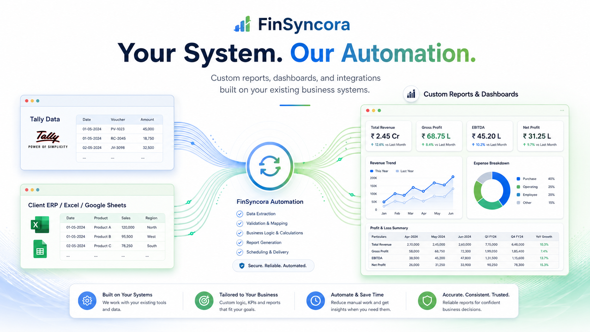

01
Tally ↔ Sheets
Tally data into a structured reporting workflow.
Explore service →FinSyncora builds practical business automation across Tally, Google Sheets, dashboards, email follow-ups, websites, and customized TDLs — so teams spend less time moving data and more time using it.

FinSyncora is led by Priya L. Salve, a finance professional with experience in financial analysis, accounting, reporting, budgeting, reconciliations, and Tally-based workflows. That finance context helps shape solutions around how business teams actually work — not only around the technology.
The working toolkit spans Tally Prime / ERP, TDL, Excel, Google Sheets, Apps Script, Power BI, Tableau, SQL, Python, finance analytics, email automation, and front-end web solutions.
Structured registers, reconciliations and recurring MIS workflows.
Explore reports →Organised workings and automation for repeated accounting tasks.
Discuss your workflow →Focused dashboards for customers, collections, payables and cash flow.
Explore dashboards →Understand the current process, systems, data sources, users, pain points, controls, and expected output.
Define fields, workflow logic, validations, triggers, access rules, reporting needs, and success criteria.
Build on sample or controlled data, test edge cases, validate output, and refine the solution with user feedback.
Deploy the working solution with basic documentation, operating guidance, and a clear handover for day-to-day use.
Share the business problem, current tools, and outcome you want. You do not need to upload confidential ledgers or client data at this stage — the first step is only to understand the workflow and scope.
↗ Workplace132000@gmail.com